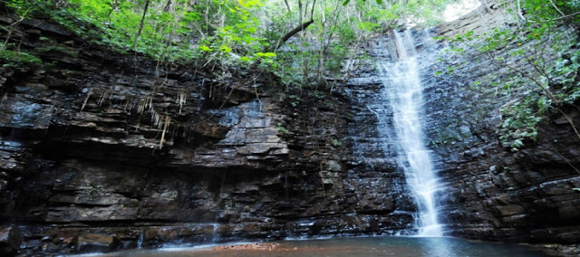

KEDOUGOU

Kédougou a été fondée par des Dioula Soninkes venus de Bakel. Son nom peut signifier "le pays de l'homme". Mais d'autre part l'étymologie est aussi attribué aux bedik maitres de la terre qui pour protéger la ville auraient enfoui (indugu en meunik) des gris-gris, c'est de ce mot que vient le nom de la région de Kédougou. Le tata de Bademba caractéristique du pays tenda est classé par les Monuments historiques. Pour un dépaysement total, la région de Kédougou est un trésor où se mêlent différentes ethnies : Soninkés, Jalonkés (ou Dialonké), Bassaris ou Bediks. Même si la population est accueillante, il est conseillé de prendre un guide pour s’y rendre et de ne pas hésiter à apporter des cadeaux aux habitants lors de la visite. Si la nature vous gagne, ne manquez pas de visiter le Parc national de Niokolo Koba et ses beaux paysages.
LE SUD ET SES MERVEILLES !!